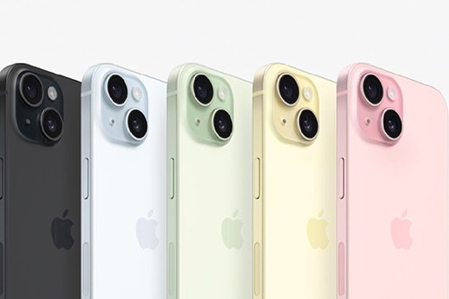

The Newest Iphone
How does the Iphone 15 will blow your mind this upcoming september 22, 2023
BEING AFRAID OF BUYING IPHONES?
Here are the specs of the new Iphone 15
- Dynamic Island.
Dynamic Island it is one of the specs of Iphone15 it bubbles up alerts and Live Activities
so you are doing something else you wont miss it.
You can control your music, see who’s calling, check your flight status,
- Color through and through.Tough all around.
The innovative new design features back glass that has color infused throughout
the material.It has also different kind of colors like Pink,Yellow, Greeen,Blue,Black
- All-new 48MP Main camera. For breathtaking, smile-making picture taking.
Now the Main camera shoots in super-high resolution.
So it’s easier than ever to take standout photos with amazing detail — from snapshots to stunning landscapes.
Upto 4x Resolution to capture incredible detail and 2x Telephoto is like having a third camera
- Focus‑pocus, magical new portraits.
It makes the portrait picture more detail and richer color
that make a dramatic difference
in your portraits. And now you can tap to shift the
focus between subjects even after you take the shot.
- All-day battery life. For all the things you want to keep doing.
Upto 26 hours video play back on iphone 15 plus
upto 20 hours video play back on iphone 15.
- USB-Compatible.
The new USB-C connector that can charge your Mac or iPad with the same cable you use to charge iPhone 15.
You can also use iPhone 15 to charge Apple Watch or AirPods.No more to cable clutter.
Iphone 15 will release on september 22, 2023 and im sure that this Iphone will makes more different than the usual phone
From its display up to the charger cables.Mark up your calendar on september 22, 2023 you shoud buy 1 and get yours.
this information is from the main website of apple you can access it trough typing https://www.apple.com/
for more info just click the picture and it will goes on apple website
